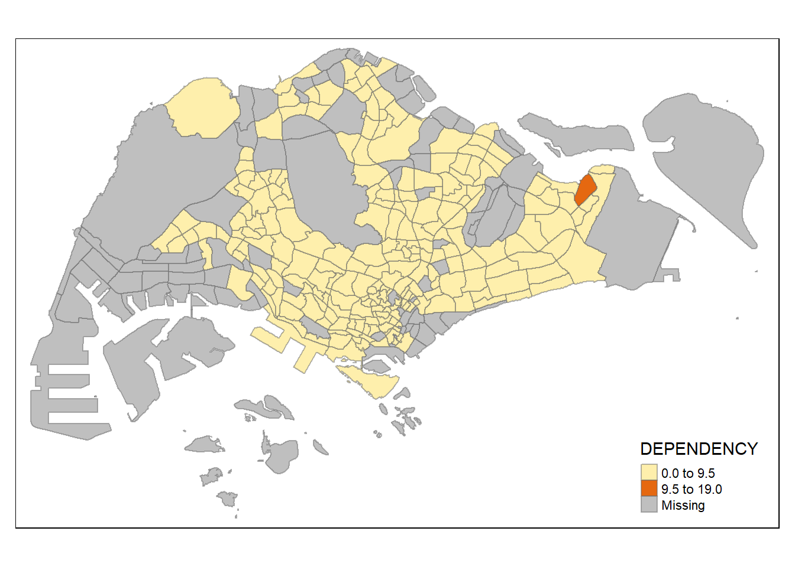
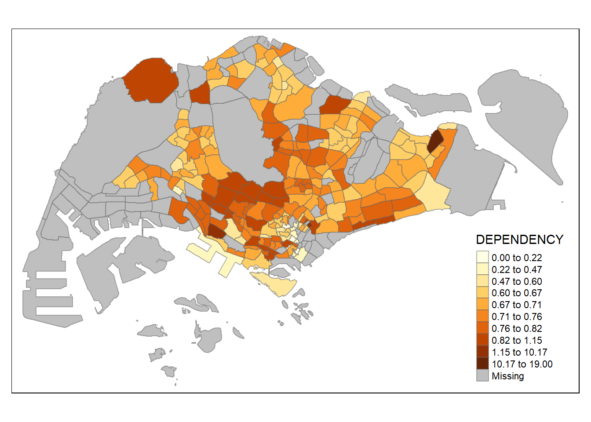

pacman::p_load(sf, tmap, tidyverse)Geospatial Exercise 2
Let’s start off with the preliminary dump of initial loading and exploratory analysis from class:
mpsz <- st_read(dsn = "data/geospatial",
layer = "MP14_SUBZONE_WEB_PL")Reading layer `MP14_SUBZONE_WEB_PL' from data source
`C:\Users\yapho\Documents\SMU\smu y4\is415\hxyap_IS415\exercises\ex2\data\geospatial'
using driver `ESRI Shapefile'
Simple feature collection with 323 features and 15 fields
Geometry type: MULTIPOLYGON
Dimension: XY
Bounding box: xmin: 2667.538 ymin: 15748.72 xmax: 56396.44 ymax: 50256.33
Projected CRS: SVY21 mpszSimple feature collection with 323 features and 15 fields
Geometry type: MULTIPOLYGON
Dimension: XY
Bounding box: xmin: 2667.538 ymin: 15748.72 xmax: 56396.44 ymax: 50256.33
Projected CRS: SVY21
First 10 features:
OBJECTID SUBZONE_NO SUBZONE_N SUBZONE_C CA_IND PLN_AREA_N
1 1 1 MARINA SOUTH MSSZ01 Y MARINA SOUTH
2 2 1 PEARL'S HILL OTSZ01 Y OUTRAM
3 3 3 BOAT QUAY SRSZ03 Y SINGAPORE RIVER
4 4 8 HENDERSON HILL BMSZ08 N BUKIT MERAH
5 5 3 REDHILL BMSZ03 N BUKIT MERAH
6 6 7 ALEXANDRA HILL BMSZ07 N BUKIT MERAH
7 7 9 BUKIT HO SWEE BMSZ09 N BUKIT MERAH
8 8 2 CLARKE QUAY SRSZ02 Y SINGAPORE RIVER
9 9 13 PASIR PANJANG 1 QTSZ13 N QUEENSTOWN
10 10 7 QUEENSWAY QTSZ07 N QUEENSTOWN
PLN_AREA_C REGION_N REGION_C INC_CRC FMEL_UPD_D X_ADDR
1 MS CENTRAL REGION CR 5ED7EB253F99252E 2014-12-05 31595.84
2 OT CENTRAL REGION CR 8C7149B9EB32EEFC 2014-12-05 28679.06
3 SR CENTRAL REGION CR C35FEFF02B13E0E5 2014-12-05 29654.96
4 BM CENTRAL REGION CR 3775D82C5DDBEFBD 2014-12-05 26782.83
5 BM CENTRAL REGION CR 85D9ABEF0A40678F 2014-12-05 26201.96
6 BM CENTRAL REGION CR 9D286521EF5E3B59 2014-12-05 25358.82
7 BM CENTRAL REGION CR 7839A8577144EFE2 2014-12-05 27680.06
8 SR CENTRAL REGION CR 48661DC0FBA09F7A 2014-12-05 29253.21
9 QT CENTRAL REGION CR 1F721290C421BFAB 2014-12-05 22077.34
10 QT CENTRAL REGION CR 3580D2AFFBEE914C 2014-12-05 24168.31
Y_ADDR SHAPE_Leng SHAPE_Area geometry
1 29220.19 5267.381 1630379.3 MULTIPOLYGON (((31495.56 30...
2 29782.05 3506.107 559816.2 MULTIPOLYGON (((29092.28 30...
3 29974.66 1740.926 160807.5 MULTIPOLYGON (((29932.33 29...
4 29933.77 3313.625 595428.9 MULTIPOLYGON (((27131.28 30...
5 30005.70 2825.594 387429.4 MULTIPOLYGON (((26451.03 30...
6 29991.38 4428.913 1030378.8 MULTIPOLYGON (((25899.7 297...
7 30230.86 3275.312 551732.0 MULTIPOLYGON (((27746.95 30...
8 30222.86 2208.619 290184.7 MULTIPOLYGON (((29351.26 29...
9 29893.78 6571.323 1084792.3 MULTIPOLYGON (((20996.49 30...
10 30104.18 3454.239 631644.3 MULTIPOLYGON (((24472.11 29...popdata <- read_csv("data/aspatial/respopagesextod2011to2020.csv")Rows: 984656 Columns: 7
── Column specification ────────────────────────────────────────────────────────
Delimiter: ","
chr (5): PA, SZ, AG, Sex, TOD
dbl (2): Pop, Time
ℹ Use `spec()` to retrieve the full column specification for this data.
ℹ Specify the column types or set `show_col_types = FALSE` to quiet this message.Let’s check the data we’re presented with first…
head(popdata)# A tibble: 6 × 7
PA SZ AG Sex TOD Pop Time
<chr> <chr> <chr> <chr> <chr> <dbl> <dbl>
1 Ang Mo Kio Ang Mo Kio Town Centre 0_to_4 Males HDB 1- and 2-Room … 0 2011
2 Ang Mo Kio Ang Mo Kio Town Centre 0_to_4 Males HDB 3-Room Flats 10 2011
3 Ang Mo Kio Ang Mo Kio Town Centre 0_to_4 Males HDB 4-Room Flats 30 2011
4 Ang Mo Kio Ang Mo Kio Town Centre 0_to_4 Males HDB 5-Room and Exe… 50 2011
5 Ang Mo Kio Ang Mo Kio Town Centre 0_to_4 Males HUDC Flats (exclud… 0 2011
6 Ang Mo Kio Ang Mo Kio Town Centre 0_to_4 Males Landed Properties 0 2011Checking the age ranges:
unique_AG_values <- unique(popdata$AG)
print(unique_AG_values) [1] "0_to_4" "5_to_9" "10_to_14" "15_to_19" "20_to_24"
[6] "25_to_29" "30_to_34" "35_to_39" "40_to_44" "45_to_49"
[11] "50_to_54" "55_to_59" "60_to_64" "65_to_69" "70_to_74"
[16] "75_to_79" "80_to_84" "85_to_89" "90_and_over"Now let’s check if the slicing is correct:
old_popdata2020 <- popdata %>%
filter(Time == 2020) %>%
group_by(PA, SZ, AG) %>%
summarise(`POP` = sum(`Pop`)) %>%
ungroup()%>%
pivot_wider(names_from=AG,
values_from=POP) %>%
mutate(YOUNG = rowSums(.[3:6])
+rowSums(.[12]))`summarise()` has grouped output by 'PA', 'SZ'. You can override using the
`.groups` argument.colnames(old_popdata2020) [1] "PA" "SZ" "0_to_4" "10_to_14" "15_to_19"
[6] "20_to_24" "25_to_29" "30_to_34" "35_to_39" "40_to_44"
[11] "45_to_49" "50_to_54" "55_to_59" "5_to_9" "60_to_64"
[16] "65_to_69" "70_to_74" "75_to_79" "80_to_84" "85_to_89"
[21] "90_and_over" "YOUNG" Hmm… looks off. Let’s adjust:
popdata2020 <- popdata %>%
filter(Time == 2020) %>%
group_by(PA, SZ, AG) %>%
summarise(`POP` = sum(`Pop`)) %>%
ungroup()%>%
pivot_wider(names_from=AG,
values_from=POP) %>%
mutate(YOUNG = rowSums(.[3:6])
+rowSums(.[14])) %>%
mutate(`ECONOMY ACTIVE` = rowSums(.[7:13])+
rowSums(.[15]))%>%
mutate(`AGED`=rowSums(.[16:21])) %>%
mutate(`TOTAL`=rowSums(.[3:21])) %>%
mutate(`DEPENDENCY` = (`YOUNG` + `AGED`)
/`ECONOMY ACTIVE`) %>%
select(`PA`, `SZ`, `YOUNG`,
`ECONOMY ACTIVE`, `AGED`,
`TOTAL`, `DEPENDENCY`)`summarise()` has grouped output by 'PA', 'SZ'. You can override using the
`.groups` argument.popdata2020 <- popdata2020 %>%
mutate_at(.vars = vars(PA, SZ),
.funs = list(toupper)) %>%
filter(`ECONOMY ACTIVE` > 0)mpsz_pop2020 <- left_join(mpsz, popdata2020,
by = c("SUBZONE_N" = "SZ"))write_rds(mpsz_pop2020, "data/rds/mpszpop2020.rds")tmap_mode("plot")tmap mode set to plottingqtm(mpsz_pop2020,
fill = "DEPENDENCY")
tm_shape(mpsz_pop2020)+
tm_fill("DEPENDENCY",
style = "quantile",
palette = "Blues",
title = "Dependency ratio") +
tm_layout(main.title = "Distribution of Dependency Ratio by planning subzone",
main.title.position = "center",
main.title.size = 1.2,
legend.height = 0.45,
legend.width = 0.35,
frame = TRUE) +
tm_borders(alpha = 0.5) +
tm_compass(type="8star", size = 2) +
tm_scale_bar() +
tm_grid(alpha =0.2) +
tm_credits("Source: Planning Sub-zone boundary from Urban Redevelopment Authorithy (URA)\n and Population data from Department of Statistics DOS",
position = c("left", "bottom"))
tm_shape(mpsz_pop2020)+
tm_fill("DEPENDENCY",
style = "quantile",
palette = "Blues",
title = "Dependency ratio") +
tm_layout(main.title = "Distribution of Dependency Ratio by planning subzone",
main.title.position = "center",
main.title.size = 1.2,
legend.height = 0.45,
legend.width = 0.35,
frame = TRUE) +
tm_borders(alpha = 0.5) +
tm_compass(type="8star", size = 2) +
tm_scale_bar() +
tm_grid(alpha =0.2) +
tm_credits("Source: Planning Sub-zone boundary from Urban Redevelopment Authorithy (URA)\n and Population data from Department of Statistics DOS",
position = c("left", "bottom"))
tm_shape(mpsz_pop2020) +
tm_polygons()
tm_shape(mpsz_pop2020)+
tm_polygons("DEPENDENCY")
tm_shape(mpsz_pop2020)+
tm_fill("DEPENDENCY")
tm_shape(mpsz_pop2020)+
tm_fill("DEPENDENCY") +
tm_borders(lwd = 0.1, alpha = 1)
tm_shape(mpsz_pop2020)+
tm_fill("DEPENDENCY",
n = 5,
style = "quantile") +
tm_borders(alpha = 0.5)
This is where we shall diverge from the ctrl+c ctrl+v exercise – let’s experiment around with different numbers of classes and maybe different classification methods.
# 2 classes
tm_shape(mpsz_pop2020)+
tm_fill("DEPENDENCY",
n = 2,
style = "equal") +
tm_borders(alpha = 0.5)
# 10?
tm_shape(mpsz_pop2020)+
tm_fill("DEPENDENCY",
n = 10,
style = "equal") +
tm_borders(alpha = 0.5)As we can see, we have one district is that is heavily outlier! Let’s see what district it is:
top_5_outliers <- mpsz_pop2020 %>%
arrange(desc(DEPENDENCY)) %>%
slice(1:5)
print(top_5_outliers)Simple feature collection with 5 features and 21 fields
Geometry type: MULTIPOLYGON
Dimension: XY
Bounding box: xmin: 12386.29 ymin: 30228.47 xmax: 44163.44 ymax: 48103.9
Projected CRS: SVY21
OBJECTID SUBZONE_NO SUBZONE_N SUBZONE_C CA_IND
1 229 6 LOYANG WEST PRSZ06 N
2 96 5 KAMPONG GLAM RCSZ05 Y
3 51 11 NATIONAL UNIVERSITY OF S'PORE QTSZ11 N
4 155 5 MOUNT PLEASANT NVSZ05 N
5 297 1 LIM CHU KANG LKSZ01 N
PLN_AREA_N PLN_AREA_C REGION_N REGION_C INC_CRC FMEL_UPD_D
1 PASIR RIS PR EAST REGION ER 05FD555397CBEE7A 2014-12-05
2 ROCHOR RC CENTRAL REGION CR DCC789993ED54477 2014-12-05
3 QUEENSTOWN QT CENTRAL REGION CR 247B3009E9665A6E 2014-12-05
4 NOVENA NV CENTRAL REGION CR F910FC998DE2CB15 2014-12-05
5 LIM CHU KANG LK NORTH REGION NR E4489A0861169020 2014-12-05
X_ADDR Y_ADDR SHAPE_Leng SHAPE_Area PA YOUNG ECONOMY ACTIVE
1 43294.83 39888.77 6203.002 2114789.5 PASIR RIS 0 10
2 30934.99 31623.15 1681.627 171334.4 ROCHOR 0 30
3 21688.92 30930.12 5625.417 1755950.4 QUEENSTOWN 130 100
4 27515.31 35112.62 7234.111 3142950.1 NOVENA 190 350
5 15309.82 45819.04 18733.836 17494884.2 LIM CHU KANG 30 50
AGED TOTAL DEPENDENCY geometry
1 190 200 19.000000 MULTIPOLYGON (((43756.39 39...
2 40 70 1.333333 MULTIPOLYGON (((30913.01 31...
3 0 230 1.300000 MULTIPOLYGON (((22653.1 306...
4 160 700 1.000000 MULTIPOLYGON (((28297.1 359...
5 20 100 1.000000 MULTIPOLYGON (((15662.88 48...Turns out it’s Paris Ris!… where the aged heavily outweigh the economically active. But why so? Let’s see…
# Trying to see if the total pop count is an outlier
total_stats <- summary(mpsz_pop2020$TOTAL)
print(total_stats) Min. 1st Qu. Median Mean 3rd Qu. Max. NA's
50 3200 11090 17530 26395 131140 92 Seems like it’s skewed by the very low population there compared to the mean/median. Also note that median is quite high – right skewed dataset?
Moving on! Let’s do one more for fun – trying out the CS student’s favourite for clustering, K-means!
tm_shape(mpsz_pop2020)+
tm_fill("DEPENDENCY",
n = 10,
style = "kmeans") +
tm_borders(alpha = 0.5)
Finally, playing around with grid:
map1 <- tm_shape(mpsz_pop2020) +
tm_fill("DEPENDENCY",
style = "quantile",
palette = "Blues",
title = "Quantile") +
tm_borders(alpha = 0.5)
map2 <- tm_shape(mpsz_pop2020) +
tm_fill("DEPENDENCY",
style = "equal",
palette = "Greens",
title = "Equal Interval") +
tm_borders(alpha = 0.5)
map3 <- tm_shape(mpsz_pop2020) +
tm_fill("DEPENDENCY",
style = "jenks",
palette = "Reds",
title = "Jenks") +
tm_borders(alpha = 0.5)
map4 <- tm_shape(mpsz_pop2020) +
tm_fill("DEPENDENCY",
style = "sd",
palette = "Purples",
title = "Standard Deviation") +
tm_borders(alpha = 0.5)tmap_arrange(map1, map2, map3, map4, ncol = 2)And ta-da! We now have some… interesting colour schemes!
Moving back to your scripted data dump:
summary(mpsz_pop2020$DEPENDENCY) Min. 1st Qu. Median Mean 3rd Qu. Max. NA's
0.0000 0.6519 0.7025 0.7742 0.7645 19.0000 92 tm_shape(mpsz_pop2020)+
tm_fill("DEPENDENCY",
breaks = c(0, 0.60, 0.70, 0.80, 0.90, 1, 1.1, 1.5, 19)) +
tm_borders(alpha = 0.5)ColourBrewer time!
tm_shape(mpsz_pop2020)+
tm_fill("DEPENDENCY",
n = 6,
style = "quantile",
palette = "Blues") +
tm_borders(alpha = 0.5)
tm_shape(mpsz_pop2020)+
tm_fill("DEPENDENCY",
style = "quantile",
palette = "-Greens") +
tm_borders(alpha = 0.5)
tm_shape(mpsz_pop2020)+
tm_fill("DEPENDENCY",
style = "jenks",
palette = "Blues",
legend.hist = TRUE,
legend.is.portrait = TRUE,
legend.hist.z = 0.1) +
tm_layout(main.title = "Distribution of Dependency Ratio by planning subzone \n(Jenks classification)",
main.title.position = "center",
main.title.size = 1,
legend.height = 0.45,
legend.width = 0.35,
legend.outside = FALSE,
legend.position = c("right", "bottom"),
frame = FALSE) +
tm_borders(alpha = 0.5)
tm_shape(mpsz_pop2020)+
tm_fill("DEPENDENCY",
style = "quantile",
palette = "-Greens") +
tm_borders(alpha = 0.5) +
tmap_style("classic")tmap style set to "classic"other available styles are: "white", "gray", "natural", "cobalt", "col_blind", "albatross", "beaver", "bw", "watercolor" 
Cartographic Features
tm_shape(mpsz_pop2020)+
tm_fill("DEPENDENCY",
style = "quantile",
palette = "Blues",
title = "No. of persons") +
tm_layout(main.title = "Distribution of Dependency Ratio \nby planning subzone",
main.title.position = "center",
main.title.size = 1.2,
legend.height = 0.45,
legend.width = 0.35,
frame = TRUE) +
tm_borders(alpha = 0.5) +
tm_compass(type="8star", size = 2) +
tm_scale_bar(width = 0.15) +
tm_grid(lwd = 0.1, alpha = 0.2) +
tm_credits("Source: Planning Sub-zone boundary from Urban Redevelopment Authorithy (URA)\n and Population data from Department of Statistics DOS",
position = c("left", "bottom"))
tmap_style("white")tmap style set to "white"other available styles are: "gray", "natural", "cobalt", "col_blind", "albatross", "beaver", "bw", "classic", "watercolor" Multiple map now!
tm_shape(mpsz_pop2020)+
tm_fill(c("YOUNG", "AGED"),
style = "equal",
palette = "Blues") +
tm_layout(legend.position = c("right", "bottom")) +
tm_borders(alpha = 0.5) +
tmap_style("white")tmap style set to "white"other available styles are: "gray", "natural", "cobalt", "col_blind", "albatross", "beaver", "bw", "classic", "watercolor" 
tm_shape(mpsz_pop2020)+
tm_polygons(c("DEPENDENCY","AGED"),
style = c("equal", "quantile"),
palette = list("Blues","Greens")) +
tm_layout(legend.position = c("right", "bottom"))
tm_shape(mpsz_pop2020) +
tm_fill("DEPENDENCY",
style = "quantile",
palette = "Blues",
thres.poly = 0) +
tm_facets(by="REGION_N",
free.coords=TRUE,
drop.shapes=TRUE) +
tm_layout(legend.show = FALSE,
title.position = c("center", "center"),
title.size = 20) +
tm_borders(alpha = 0.5)Warning: The argument drop.shapes has been renamed to drop.units, and is
therefore deprecated
youngmap <- tm_shape(mpsz_pop2020)+
tm_polygons("YOUNG",
style = "quantile",
palette = "Blues")
agedmap <- tm_shape(mpsz_pop2020)+
tm_polygons("AGED",
style = "quantile",
palette = "Blues")
tmap_arrange(youngmap, agedmap, asp=1, ncol=2)
tm_shape(mpsz_pop2020[mpsz_pop2020$REGION_N=="CENTRAL REGION", ])+
tm_fill("DEPENDENCY",
style = "quantile",
palette = "Blues",
legend.hist = TRUE,
legend.is.portrait = TRUE,
legend.hist.z = 0.1) +
tm_layout(legend.outside = TRUE,
legend.height = 0.45,
legend.width = 5.0,
legend.position = c("right", "bottom"),
frame = FALSE) +
tm_borders(alpha = 0.5)Warning in pre_process_gt(x, interactive = interactive, orig_crs =
gm$shape.orig_crs): legend.width controls the width of the legend within a map.
Please use legend.outside.size to control the width of the outside legend